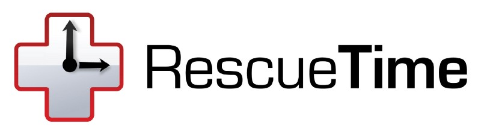

Setting up git with Rescuetime highlights
Posted on Sun 15 February 2015 in Productivity

Recently I've written on another site how I use Rescuetime to provide metrics on my overall productivity that I can review each week. One useful feature I noticed was Rescuetime highlights, which gives you a good overview of your accompishments throughout the day. The first thing I wanted to add to this (obviously) was git commits.
Luckily it turns out someone had already thought of this and implemented it. The script itself is here, I'm just going to reproduce it below.
#!/bin/sh
#
# An example hook script to log commit messages
# as a 'daily highlight' in RescueTime Premium
#
# See README.md for more information
#
# To enable this hook:
#
# 1. Place this file in .git/hooks and rename to "post-commit".
#
# 2. Update the value of API_KEY below with a valid RescueTime API key.
# [ you can generate a key at [https://www.rescuetime.com/anapi/manage](https://www.rescuetime.com/anapi/manage) ]
API_KEY=PUT_YOUR_API_KEY_HERE
# REQUIRED FIELDS - Today's date and commit message
MESSAGE=$(git log -1 HEAD --pretty=format:%s)
DATE_TODAY=$(date +"%Y-%m-%d")
# You can edit the LABEL value if you would rather
# describe these commits differently.
LABEL='Code Commit'
# See more filtering examples in README.md
if [[ ${#MESSAGE} -gt 16 ]]; then
curl --data "key=$API_KEY&highlight_date=$DATE_TODAY&description=$MESSAGE&source=$LABEL" [https://www.rescuetime.com/anapi/highlights_post](https://www.rescuetime.com/anapi/highlights_post)
fi
Now, the annoying part for me is that this doesn't work globally across all of my git repos, so to fix this you can leverage git's templates directory. To create/initialise a git template folder simply run these commands.
git config — global init.templatedir '~/.git_template'
mkdir -p ~/.git-templates/hooks
Then put the above shell code into ~/.git-templates/hooks/post-commit
What this means is that from now on, any new git repos you initialise will contain this post-hook script. However, if you want to attach this to existing repos, just run a git init wherever the .git folder is.